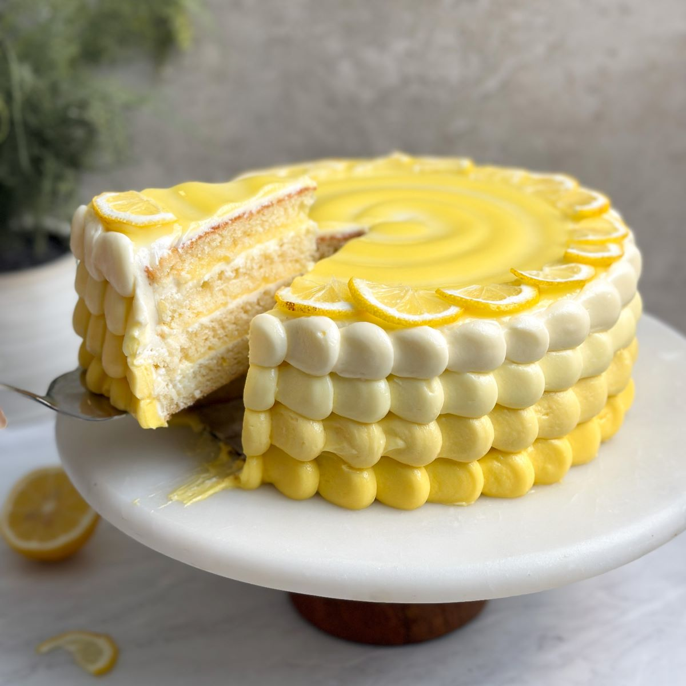

Sunshine Leom Cake

Description
This is the perfect cake for treating guests on a summer day.
Ingredients
- 1 cup (1/2 lb.) butter, softened
- 1 3/4 cups granulated sugar
- Finely chopped zest of 6 lemons
- 6 egg yolks
- 2 1/2 cups all-purpose flour
- 1 tbsp. baking powder
- 1/2 tsp. salt
- 1 1/4 cups milk
- 4 cups confectioners' sugar
- Juice of 3 lemons
Directions
- Preheat the oven to 350 degrees.
- Lightly butter and flour two 9-inch round cake pans.
- Cream 1/2 cup of the butter and the sugar in the bowl of an
electric mixer until light and fluffy.
- Add half the zest and all the egg yolks, one at a time.
- Sift together the flour, baking powder and salt.
- Add the dry ingredients, in thirds, to the egg mixture, alternating
with the milk, and ending with the last of the dry ingredients.
- Divide the batter into the prepared pans.
- Bake for 25 to 30 minutes, until golden or the center springs back
when touched.
- Place on a rack to cool for 10 minutes.
- Remove cakes from pans and place them onto rack to cool
completely before frosting.
- Meanwhile, combine the remaining 1/2 cup butter, confectioners'
sugar, remaining zest and the lemon juice until smooth.
- Frost and assemble the cake.
Makes 1 X 9 - inch layer cake.
Recipes Home